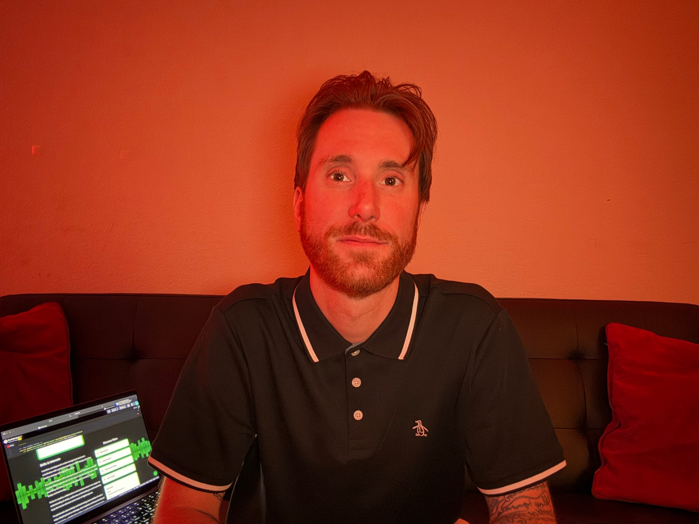

Trinity Environmental
Created a complete digital presence that organizes a multifaceted environmental operation into a clear path from evaluation to contact.
View case studyClayton Dunagan Multidisciplinary Digital Professional
I combine digital strategy, UX/UI design, front-end development, and hands-on client delivery to move projects from early direction through launch.

Based in Austin, Texas
Selected Work
Created a complete digital presence that organizes a multifaceted environmental operation into a clear path from evaluation to contact.
View case study
Repositioned an established commercial-seating manufacturer with clearer navigation, stronger proof, and more useful inquiry paths.
View case studyHow I Work
I begin by clarifying the people involved, the business goals, the practical constraints, and what success needs to look like. This keeps decisions connected to the problem instead of personal preference.
I translate research and business context into positioning, content hierarchy, user flows, and interfaces that make complex information easier to understand and act on.
I stay involved from early direction through design, front-end development, testing, quality assurance, and handoff so the final experience remains consistent with the decisions behind it.
Explore the Full Process
Explore selected case studies showing how I define problems, organize complex information, make design decisions, and carry digital projects toward launch.